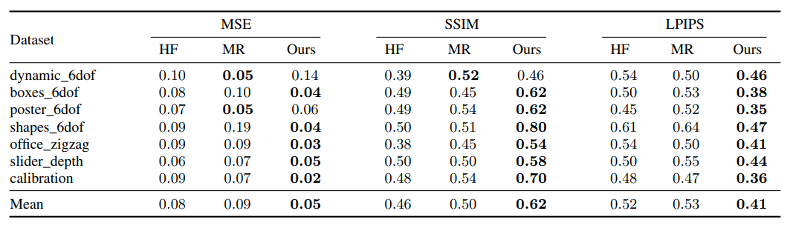
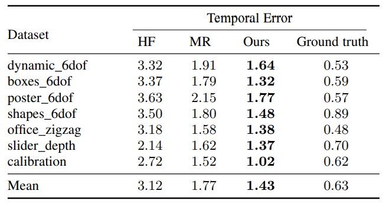
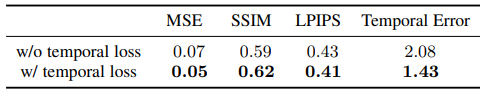
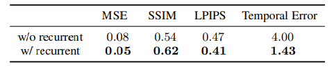
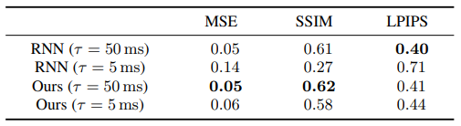
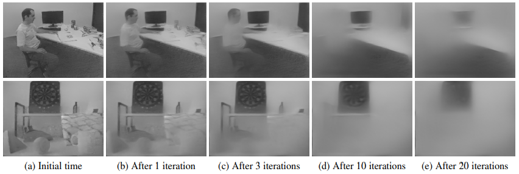

E2Vid: High Speed and High Dynamic Range Video with an Event Camera
High Speed and High Dynamic Range Video with an Event Camera
循环神经网络完成事件相机重构强度图像。
Abstract
事件相机是一种新型的传感器，它以异步“事件”流的形式来表示亮度变化，而不是以强度帧的形式。与传统相机相比，它们具有显著的优势：高时间分辨率，高动态范围，无运动模糊。虽然事件流在原则上编码了完整的视觉信号，但从事件流中重建强度图像在实践中是一个不适定问题。现有的重建方法是基于人为制定的先验和对成像过程的强假设以及对自然图像的统计。在这项工作中，我们建议学习从事件流直接从数据重建强度图像，而不是依赖于任何人为制定的先验条件。
我们提出了一种新颖的循环网络来从事件流中重建视频，并在大量的模拟事件数据上对其进行训练。在训练期间，我们建议使用感知损失来鼓励重建遵循自然的图像规律。我们进一步扩展了从彩色事件流合成彩色图像的方法。我们的定量实验表明，在图像质量方面，我们的网络超过了最先进的重建方法（>20%），同时能够实时运行。我们证明，该网络能够合成高速现象（如子弹击中物体）的高帧率视频（>5000帧/秒），并能够在极具挑战性的光照条件下提供高动态范围重建。
作为额外的贡献，我们演示了我们的重构作为事件数据的中间表示的有效性。我们表明，现有的计算机视觉算法可以应用于我们的任务重建，如物体分类和视觉惯性测距，这种策略一贯优于专门为事件数据设计的算法。我们开源重建代码和一个预先训练的模型，以便进一步的研究。
Contributions
- 提出一种从事件流中重建视频的新颖循环网络，并在图像质量方面大大优于目前的技术水平。
- 我们建立了从模拟事件数据训练的网络可以很好地推广到真实事件。
- 定性结果表明，我们的方法可以用于多种设置，如高速场景下的高帧率视频合成(章节5.1)，高动态范围视频的重建(章节5.2)，彩色视频的重建(章节5.3)。
- 将我们的方法应用于两个下游问题：物体分类（object classification）和基于事件数据的视觉惯性测距（visual-inertial odometry）。我们的方法优于专为两个应用程序中的事件数据设计的最新算法。
Proposed Method
强度信号 , 事件 ，根据每个像素的出发阈值C来触发事件，在图像平面上C既不是常数，也不是均匀的，其变化取决于很多因素，例如有限的读出带宽与温度等等。因此不能直接合成事件得到强度图像。
我们的目标是用事件恢复出图像流： ,将事件流划分为不重叠的时空窗（spatio-temporal windows） ，其中 ，每个窗口的事件数量为N，重构函数由一个递归卷积神经网络实现，该网络通过时间来维持和更新内部状态 ，对于每一个新的事件序列 我们用 来生成新图像 并更新 。我们以有监督的方式训练网络，使用大量的模拟事件序列和相应的ground-truth。如下图所示：

Event Presentation：
将 表示为张量 输入网络，将事件编码为spatio-temporal voxel grid， 的持续时间 ，被离散化为B个时间容器，每个事件将其极性分配到两个最近的voxel grid里：
其中 是规范化的时间戳，我们令B=5。
Training Data：
数据需求：大量序列事件以及其ground-truth。并且传统相机在大动态范围下难以捕捉高质量的gt，因此采用合成数据的形式，ESIM。模拟MS-COCO，大小240x180为了匹配DAVIS240C。此外，还为每个模拟场景模拟不同的正、负对比阈值集(根据均值0.18，标准差0.03的正态分布采样)，进一步丰富了训练数据，数据增强，能使其在模拟数据上做的很好，但是真实数据难以推广。
数据集有1000个2s的序列，总共大约35min的模拟事件序列，只包含世界上包含的运动（即模拟序列内不包含独立运动）。然而，我们的网络惊人地适用于任意运动的场景，如第4节和第5节所示。
Network Architecture：
网络结构是循环的全卷积网络，灵感来源于U-Net架构，包括head layer H， 个循环编码层 , 个残差块 , 个解码层 , 以及最后的图像预测层 。用skip connections连接对称的编码解码层，第一层H的输出通道为 ，并在每个编码层之后翻倍，也就是经过编码层之后的输出通道为 。预测层输出通道为1，kernel size为5，最后是一层sigmoid层，产生图像预测。


编码层 先是一个二维降采样卷积层（kernel size：5，stride：2），然后是一个convLSTM层，kernel size为3，输入层数和隐含层数与前一个下采样卷积相同。每个编码器维持一个状态 ,并在每一次迭代时更新，并在第一次迭代时（k=0）初始化为0。中间的残差块的kernel为3，每个decoder layer由双线性上采样接着一个kernel5的卷积层构成、最后，我们使用ReLU激活(除最终预测外的每一层)和BN层。


我们用element-wise sum的方式进行skip connection，并设置 ， ， 在第6.1节中，我们将这些超参数的选择作为对多个网络架构进行搜索的结果。
在训练期间，我们展开了L步的网络（L=40），这与[30]的做法截然不同，[30]用普通的RNN且L只有8，长序列时会有梯度消失的现象，相比之下，我们的网络采用了ConvLSTM gates防止这些问题，并允许我们在更长的序列上进行训练。在第6节中，我们展示了基于LSTM的体系结构改善了网络的时间稳定性。
Loss：
使用图像重建损失和时间一致性损失。
图像重建损失保证重建图像与目标图像相近，去模糊里用MSE均方误差。但是我们用感知损失LPIPS，感知损失通过ImageNet[34]上训练的VGG网络[33]将重构图像和目标图像进行传递，并对VGG特征之间的跨层距离进行平均。通过最小化LPIPS，我们的网络有效地学习了赋予重建图像自然统计(即具有接近自然图像的特征)。重建损失用 来表示。
时间一致性损失：在我们之前的工作[30]中，网络依靠循环连接自然地加强连续重建图像之间的时间一致性。然而，一些时间伪影仍然存在，特别是一些轻微的闪烁，在均匀的图像区域特别明显。为了解决这个问题，我们引入了显式的时间一致性损失，它的效果将在章节6中演示。我们的时间一致性损失基于[35]，给定连续帧间的光流映射 ，时间损失按两个连续重建帧之间的warping error计算：
其中 是用光流 从 warping到重建的 ，而 是一个有助于减轻遮挡影响的加权项(当gt图像 的warping误差很高时，该加权项很小，而这主要发生在遮挡情况下)。实验中我们设置 。
注意光流映射只在训练时需要，而在推理时不需要。最终损失为重建损失和时间损失的加权和:
其中 (这个值是根据经验选择的，以平衡两种损失的取值范围)， (在计算时间损失时，忽略每个序列的前几个样本，留给重构收敛时间)。
Traning procedure:
将合成序列分成950个训练序列和50个验证序列，将输入的事件张量归一化，使每个张量的非零值的均值和标准差分别为0和1。图像增强：随机2D旋转（±20 degrees），水平和垂直翻转，随机裁剪（crop size：128x128）。
Pytorch Adam，学习率为0.0001，batch size为2，160个epochs（320000次迭代）
Post-processing（后处理）：
虽然sigmoid激活保证了得到的预测图像 值取0到1之间的值，但我们观察到输出值的范围通常不跨整个范围，即重建的对比度较低。为了弥补这一点，我们使用鲁棒的最小/最大归一化来缩放图像强度，以得到最终的重建结果 :
其中m和M是1%和99%的预测图象的占比，最终结果被归一化到[0,1]。
Evaluation
在真实数据集上评估，由DAVIS240C传感器记录IJRR数据集（slider_depth等）。在计算指标之前，对ground-truth和重构帧做局部直方图均衡化（使强度值位于相同的强度范围之内）。还排除了序列末尾的模糊部分与刚开始的缓慢部分。
下表是在IJRR数据集上评估的结果 ，评估指标为MSE，SSIM与LPIPS：

下表是数据集上的事件一致性损失：

Analysis
在该章节中对网络做一些分析，分析计算效率，随后进行消融实验，说明那些部分是有用的。最后分析一些有趣的特性。
Ablation Studies:
Temporal Loss：在总损失中，我们令，得到的结果如下表所示，用相同的方法在数据集上进行评估，毫无疑问，加入了时序一致性损失的时序一致性与图像质量整体上会更好。

Recurrent Connection：下表比较了去除循环连接的图像质量与保留循环连接的网络的重构图像质量，可以明显看出，在时序一致性与图像质量上都有较大的提升，时序一致性的提升尤其明显。这说明网络可以有效利用其短期记忆重建精确的图像。

ConvLSTM vs. vanilla RNN：比较使用堆叠ConvLSTMs和最初使用的RNN，在不同的（事件频率）下进行对比，50ms（接近训练事件数）和5ms，来评估泛化能力，实验结果如下图所示：要注意的是，5ms的实验更加难，事件数量少得多，更依赖于内部的记忆。可以看到，普通rnn在这种情况下质量急剧下降，而我们的网络则下降的不多，因此在事件数量上的鲁棒性更好。

Edge Cases：
接下来介绍几个有趣的边缘案例，包括初始化阶段与网络的记忆时长。
Initialization：在初始化的时候，只有很少的事件，我们更好，没啥好说。
Network Memory：网络能记忆的事件有多长，也就是时序上的感受野大小，我们做了一个简单的实验，给定一个事件序列，并在某一时间后将所有事件清零，输入空张量到网络中，结果如下图所示：完全没有事件的时候，网络会尝试保持前面的输出，当网络使用不包含的事件的空张量进行推断时， 图像的强度会逐渐衰减。有趣的是，图像的衰减并不是完全一致的，对比度高的区域，如下图中的飞镖板，会保留更多的迭代次数。
